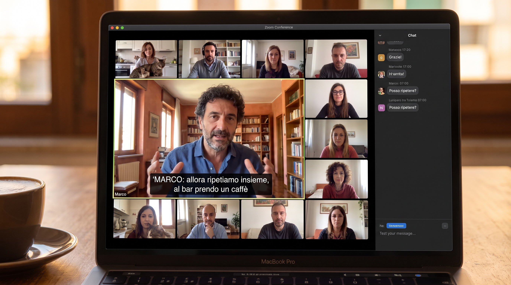

A small group
Ten to twelve adults on screen. No broadcast.
Not a demo. Not a trailer. A full eighty five minute class with Marco Rinaldi, live from Roma, at CI Principiante level A0 to A1.1, released with student permission.
Ten to twelve adults on screen. No broadcast.
Marco Rinaldi, live from Roma. His Roman study is behind him on the camera.
This class opens on a Roman coffee bar. The grammar arrives through the scene, not before it.

Marco Rinaldi, live from Roma, in a CI Principiante class recorded on 12 September 2025.
Marco: Allora, Diane, com'è andato il weekend a Portland?
Diane: Bene, grazie. Sono andata al mercato con mia figlia.
Marco: Bello. E cosa avete comprato?
Diane: Del pane, un po' di formaggio, e due bottiglie di vino italiano.
Marco: Vino italiano. Bravissima. Da che regione?
Diane: Non ricordo. Un rosso della Toscana, credo.
Marco: So, Diane, how was the weekend in Portland?
Diane: Good, thank you. I went to the market with my daughter.
Marco: Nice. And what did you buy?
Diane: Some bread, a little cheese, and two bottles of Italian wine.
Marco: Italian wine. Well done. From which region?
Diane: I do not remember. A red from Tuscany, I think.
You cannot fake ten adults on a screen speaking to one another. That was the moment I signed up.
I watched the sample class twice. The second time I noticed how he brings the quiet students into the conversation without making it awkward. That is a teacher.
I have taken a lot of language courses on video. This was the first one where I thought, that is a room I want to sit in.
Every student spoke in the segment I watched. That is the small group promise, kept.
It looked like the language courses I remembered from university, not like a phone app.
The whole recording is serious about the language and warm with the students. Those two things do not always come together.
A recorded lecture is a talk.
A recorded live class is a room.
The difference is the whole product.
The next step is a fifteen minute call with an advisor. We plan a real start, in a real cohort.
If the sample class showed you the school, we can enrol you into the next October cohort in one call.